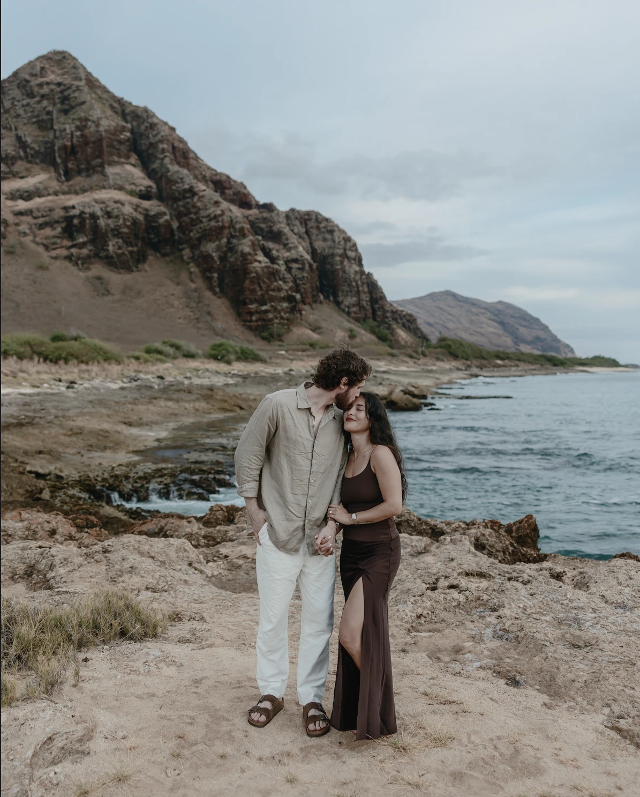

Hotel Piedra Viva
Ocotitlán 4, 62525 Tepoztlán, Morelos, México. Complimentary parking is available.
Welcome
Hand in hand,
a new chapter.
It is our delight to welcome you to our wedding celebration. We cannot wait to gather with the people we love most in the mountains of Tepoztlán.
Please join us before God on Tuesday, November 3, 2026, at Hotel Piedra Viva.
